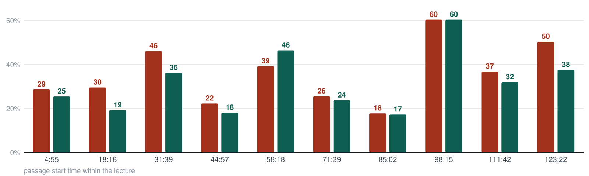

Panopto heard “Jerusalem police”.
We heard “vertex cover”.
One 2-hour-13-minute algorithms lecture. The same audio through both engines, scored against an independent third transcriber.
Every passage, side by side
Panopto
Accessible Academic

Where Panopto breaks
Verified against the independent transcript
00:52
Mathematical notation — the lecturer defines the input graph G = (V, E)
Reference
…בקלט הוא גרף מכוון G שווה VE, והמטרה למצוא קבוצת קשתות גדולה ככל האפשר…
Panopto
…הוא גרף מכוון give והמטרה למצוא קבוצת קשתות גדולה ככל האפשר…
Accessible Academic
…הוא גרף מכוון G שווה VE, והמטרה למצוא קבוצת קשתות, גדולה ככל האפשר…
52:48
Context collapse — the lecturer recaps the 2-approximation for vertex cover
Reference
…ראינו אלגוריתם קירוב… קירוב 2 לברטקס [קאבר]…
Panopto
רציתי להגיד שאני אעשה כל מה שעושה לי טוב, מושלם, כמו שאני יודעת שאני משטרת ירושלים… ראינו אלגוריתם קירור בארץ קירור לוורדפרס…
Accessible Academic
…שנעשה קירוב אלגוריתם של ורטקסט חברה … של קירוב שתיים… ראינו אלגוריתם קירוב בארץ קירוב שתיים וורטקסט חברה…
Also tested against Whisper
Same recording, OpenAI’s own speech model
On ordinary passages the two transcripts are nearly identical. In the single hardest passage in the lecture — overlapping questions from the audience — ours stays readable where Whisper’s own transcript breaks into noise.
98:32
A student asks about linear-time complexity
Whisper
…לא בזמן לינארים. תצודק אותו. בסדר? להיברילות…
Accessible Academic
…בסדר להגיד שזה קורה בזמן לינארי. כן, זה קורה בזמן לינארי, צודק. בסדר?…